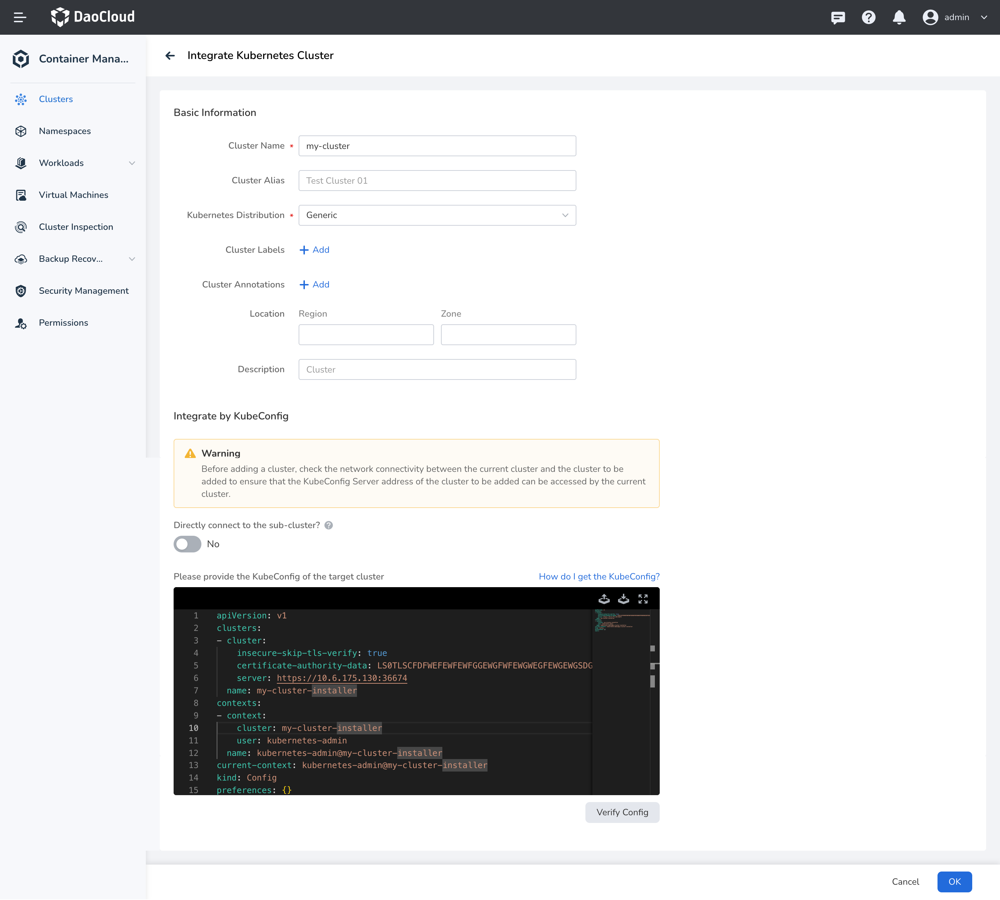
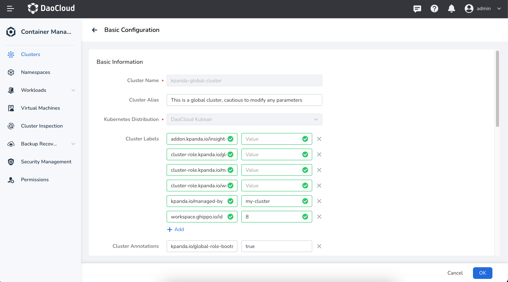

Scaling the Worker Nodes of the Global Service Cluster¶
This page introduces how to manually scale the worker nodes of the global service cluster in offline mode. By default, it is not recommended to scale the global service cluster after deploying AI platform. Please ensure proper resource planning before deploying AI platform.
Note
The controller node of the global service cluster do not support scaling.
Prerequisites¶
- The AI platform deployment has been completed through bootstrap node, and the kind cluster on the bootstrap node is running normally.
- You must log in with a user account that has admin privileges on the platform.
Get kubeconfig for the kind cluster on the bootstrap node¶
-
Run the following command to log in to the bootstrap node:
-
On the bootstrap node, run the following command to get the
CONTAINER IDof the kind cluster:[root@localhost ~]# podman ps # Expected output: CONTAINER ID IMAGE COMMAND CREATED STATUS PORTS NAMES 220d662b1b6a docker.m.daocloud.io/kindest/node:v1.26.2 2 weeks ago Up 2 weeks 0.0.0.0:443->30443/tcp, 0.0.0.0:8081->30081/tcp, 0.0.0.0:9000-9001->32000-32001/tcp, 0.0.0.0:36674->6443/tcp my-cluster-installer-control-plane -
Run the following command to enter a container in the kind cluster:
Replace
{CONTAINER ID}with your actual container ID. -
Inside the container of the kind cluster, run the following command to get the kubeconfig information for the kind cluster:
After the console output, copy the kubeconfig information of the kind cluster for the next step.
Create cluster.kubean.io resources in the kind cluster on the bootstrap node¶
-
Use the command
podman exec -it {CONTAINER ID} bashto enter the kind cluster container. -
Inside the kind cluster container, run the following command to get the kind cluster name:
-
Copy and run the following command within the kind cluster to create the
cluster.kubean.ioresource:kubectl apply -f - <<EOF apiVersion: kubean.io/v1alpha1 kind: Cluster metadata: labels: clusterName: kpanda-global-cluster name: kpanda-global-cluster spec: hostsConfRef: name: my-cluster-hosts-conf namespace: kubean-system kubeconfRef: name: my-cluster-kubeconf namespace: kubean-system varsConfRef: name: my-cluster-vars-conf namespace: kubean-system EOFNote
The default cluster name for
spec.hostsConfRef.name,spec.kubeconfRef.name, andspec.varsConfRef.nameismy-cluster. Please replace it with the kind cluster name obtained in the previous step. -
Run the following command in the kind cluster to verify if the
cluster.kubean.ioresource is created successfully:Expected output is:
Update the containerd configuration in the kind cluster on the bootstrap node¶
-
Run the following command to log in to one of the controller nodes of the global service cluster:
-
On the global service cluster controller node, run the following command to copy the containerd configuration file config.toml from the controller node to the bootstrap node:
-
On the bootstrap node, select the insecure registry section from the containerd configuration file config.toml that was copied from the controller node, and add it to the config.toml in the kind cluster.
An example of the insecure registry section is as follows:
[plugins."io.containerd.grpc.v1.cri".registry] [plugins."io.containerd.grpc.v1.cri".registry.mirrors] [plugins."io.containerd.grpc.v1.cri".registry.mirrors."10.6.202.20"] endpoint = ["https://10.6.202.20"] [plugins."io.containerd.grpc.v1.cri".registry.configs."10.6.202.20".tls] insecure_skip_verify = trueNote
Since the
config.tomlfile in the kind cluster cannot be modified directly, you can first copy the file out to modify it and then copy it back to the kind cluster. The steps are as follows:-
Run the following command on the bootstrap node to copy the file out:
-
Run the following command to edit the
config.tomlfile: -
After modifying the file, copy it back to the kind cluster by running the following command:
{CONTAINER ID} should be replaced with your actual container ID.
-
-
Run the following command within the kind cluster to restart the containerd service:
Integrate a Kind cluster into the AI platform cluster list¶
-
Log in to AI platform, navigate to Container Management, and on the right side of the cluster list, click the Integrate Cluster button.
-
In the integration configuration section, fill in and edit the kubeconfig of the Kind cluster.
apiVersion: v1 clusters: - cluster: insecure-skip-tls-verify: true # (1)! certificate-authority-data: LS0TLSCFDFWEFEWFEWFGGEWGFWFEWGWEGFEWGEWGSDGFSDSD server: https://my-cluster-installer-control-plane:6443 # (2)! name: my-cluster-installer contexts: - context: cluster: my-cluster-installer user: kubernetes-admin name: kubernetes-admin@my-cluster-installer current-context: kubernetes-admin@my-cluster-installer kind: Config preferences: {} users:- Skip TLS verification; this line needs to be added manually.
- Replace it with the IP of the Kind node, and change port 6443 to the port mapped to the node (you can run the command
podman ps|grep 6443to check the mapped port).

-
Click the OK to complete the integration of the Kind cluster.
Add Labels to the Global Service Cluster¶
-
Log in to AI platform, navigate to Container Management, find the kapnda-global-cluster , and in the right-side, find the Basic Configuration menu options.
-
In the Basic Configuration page, add the label
kpanda.io/managed-by=my-clusterfor the global service cluster:
Note
The value in the label kpanda.io/managed-by=my-cluster corresponds to the name of the cluster
specified during the integration process, which defaults to my-cluster.
Please adjust this according to your actual situation.

Add nodes to the global service cluster¶
-
Go to the node list page of the global service cluster, find the Integrate Node button on the right side of the node list, and click to enter the node configuration page.
-
After filling in the IP and authentication information of the node to be integrated, click Start Check . Once the node check is completed, click Next .
-
Add the following custom parameters in the Custom Parameters section:
download_run_once: false download_container: false download_force_cache: false download_localhost: false
-
Click the OK button and wait for the node to be added.